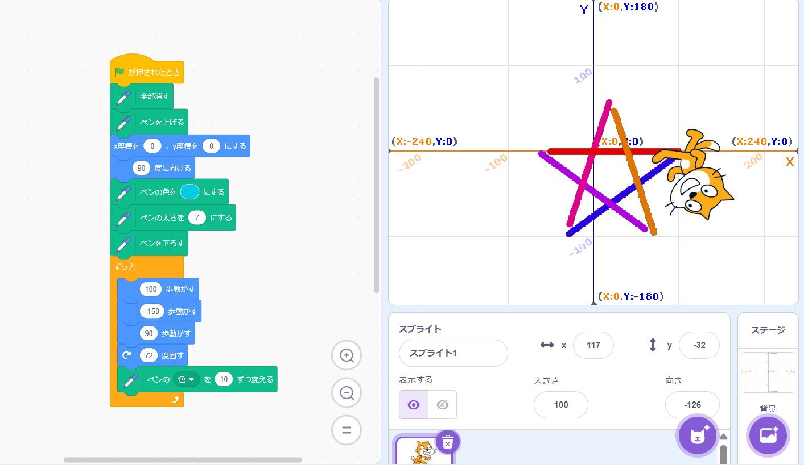

1週目のレポート ： 公大高専１年実習I-1
3b班37番 shota1011
第1週目
1-1 サイエンスアート

1.内容
スクラッチ機能を使って，星形が描かれるようにプログラミングした。
2.感想 回す角度を72度に設定し，歩く歩数を変更することできれいな星形を描くことができた。しっかり考えてプログラミングすることで，自分の描きたい模様が描けれることが分かった。
1-2 ゲーム
1.内容
メッセージ機能を用いて，猫がリンゴに当たるとポイントを獲得し，ポイントをできるだけ多く集めるゲームを作成した。
2.感想
反対にリンゴの設定をいじって，猫に当たった時に表示を消すというプログラミングを組み立てたが，上手くいかなかった。理由は条件が少なく，プログラムを組み立てれていなかったからだと思う。
1-3 ホームページ作成
私のホームページ
1.内容
自分の情報をホームページに書き込み，オリジナルホームページを作成した。
2.感想
あまり慣れない操作を行ってホームページを作成したが，だんだんと慣れてきたのでこの方法でレポートを作るほうが楽だった。また，間違っているとはじかれるのでより分かりやすかった。
各ページへのリンク
1週目のレポート
2週目のレポート
3週目のレポート
私のホームページ